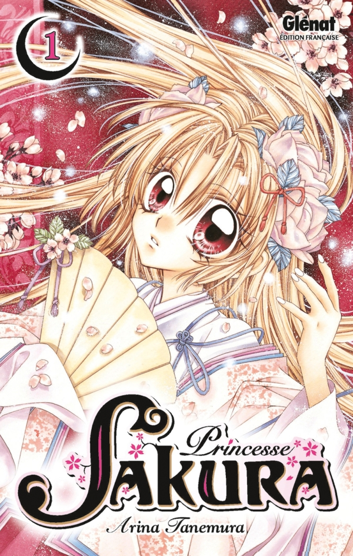
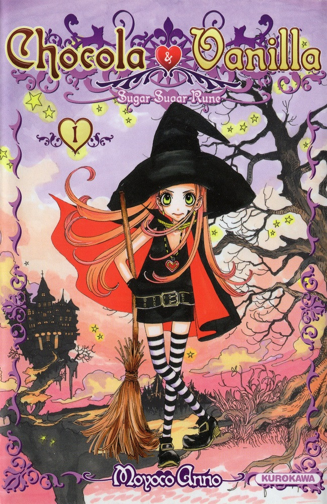
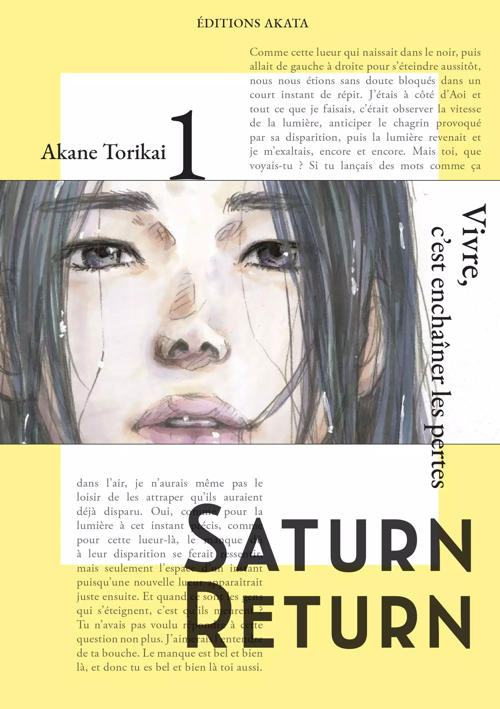
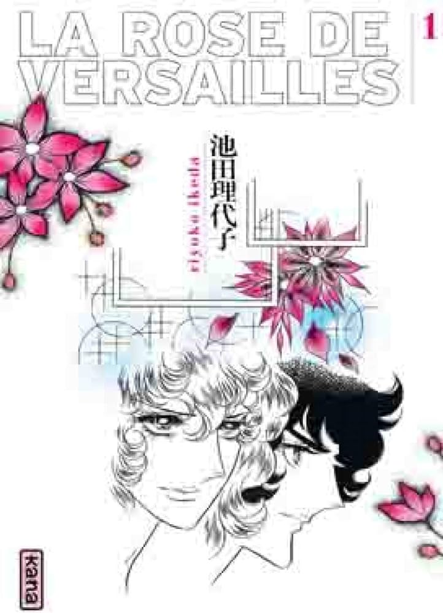
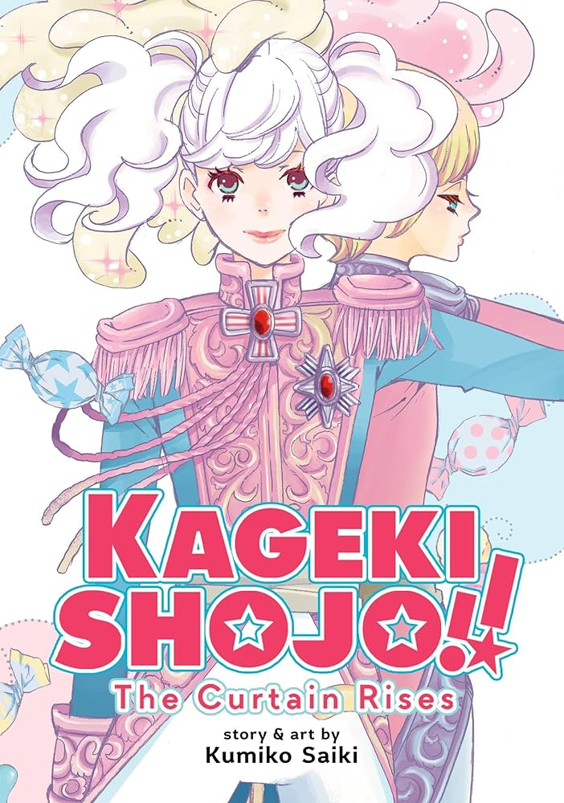
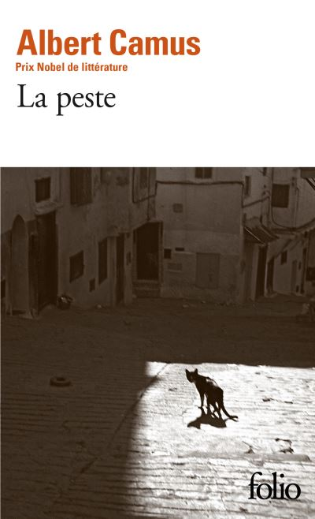

Navigation
Navigation
hiyaa !! c'est mae jai 20 ans et jadore lire surtout des shojos et des josei je vous présente ma bibliothèque numérique fais avec amour ♡૮ • ﻌ - ა

Princesse Sakura by Arina Tanemura
Sakura jeune fille orpheline aimer des autres se rebelle quand le serviteur du prince Ora auquel elle est forcer de se mariée arrive sans même prevenir. Sakura vexer decide de fuguer et de vivre sa vit comme elle l'entend mais elle est vite rattraper par la réaliter car un démon férose tante de s'en prendre a elle.
my tought : j'en suis qu'au premier chapitre so far et j'adore ! les dessins sont magnifique ça me donne envie de découvrir plus d'oeuvres de cette mangaka. J'ai beaucoup trop aimer le fait que le boug essaye de lui venir en aide mais elle s'en sort toute seule i love ittt☆

Sugar Sugar Rune by Moyoco Anno
chocola et vanilla sont deux petite sorcière prétendant au titre de reine du pays des sorciers. A l’aide de leur mentor Rockn’Lovin et leur animaux magiques toutes deux se mènent un combat acharné mais n’étaient elles pas meilleurs amies?
my tought : Mon premier manga et de loin mon préfèrer les dessins de Moyoco m'ont toujours éblouit. La relation qu'entretiennent Chocola et Vanilla est adorable elles feraient nimporte quoi l'une pour l'autre I aspire to be like them

Saturn Return by Akane Torikai

La rose de Versailles by Riyoko Ikeda

Kageki Shojo by Kumiko Saiki

La peste by Albert Camus
La peste raconte l’histoire d’un médecin en Algérie faisant face à la plus grande épidémie duquel il est été témoins. La peur de l’humain face au désespoir fait froid dans le dos mais quelque moment de pur bonheur se cache toujours dans le malheur car l’être humain à cet devoir de se sortir malgré tout.
my toughtc'était une lecture très intéressante